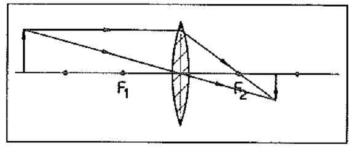
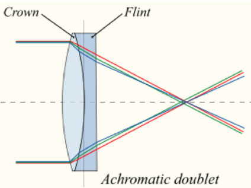
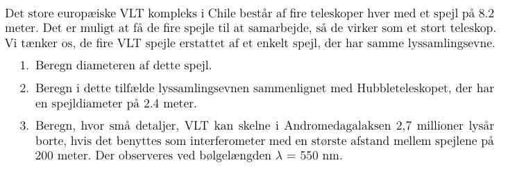
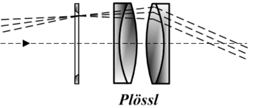
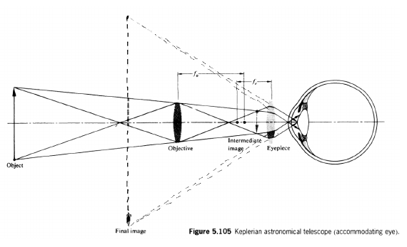

Refraktive teleskoper
Teknik og metoder - Astronomi C
Tynde linser
Linsetyper
Regler for tynde samlelinser
Regler for tynde samlelinser
- Lysstråle parallel med optisk akse går gennem brændpunktet.
- Lysstråle gennem midtpunkt går ubrudt igennem.
Billeddannelse for samlelinser
Omvendt, virkeligt og forstørret billede
Omvendt, virkeligt og formindsket billede

Omvendt, virkeligt og uforstørret billede
Opret, indbildt og forstørret billede
Sådan virker en lup
Formler
Linseformlen
\[\frac{1}{f} = \frac{1}{b}+ \frac{1}{g}\]
- \(b\) og \(g\) er positive for virkelige genstande og billeder.
- \(f\) er positiv for en samlelinse.
- \(f\) er negativ for en spredelinse.
Effektive brændvidder
\[\frac{1}{f} = \sum_{i=1}^N = \frac{1}{f_1} + \frac{1}{f_2} + \dots + \frac{1}{f_{N-1}} + \frac{1}{f_N}\]
- Linserne skal være indenfor hinandens brændvidder.
Linsemagerens formel
\[\frac{1}{f} = \left( n_l -1 \right) \left( \frac{1}{R_1} - \frac{1}{R_2} \right)\]
Linsemagerens formel
Forstørrelse
Forstørrelse for en linse
\[M = \frac{b}{g}\]
- Hvis \(M<0\) er billedet indbildt og dermed retvendt.
- Hvis \(M>0\) er billedet virkeligt og omvendt.
- Skal blandt andet bruges i opgave 3 og 4 i kompendiet om optik.
Forstørrelse for teleskoper
\[M_\text{teleskop} = \frac{f_\text{objektiv}}{f_\text{okular}}\]
Forstørrelse for teleskoper
\[M_\text{teleskop} = \frac{f_\text{objektiv}}{f_\text{okular}}\]
Sammensatte linser
Én linse
Én linse

Én linse
En sammensat linse

Opgave 5 - sammensat linse
Se side 22 i kompendiet om optik.
Lysintensitet
Lysintensitet
Effekt pr. areal (samme enhed som flux)
\[I \equiv \frac{P}{A}\]
- Ved forstørrelse formindskes intensiteten.
- Forstørrelse på 2, fordobler alle længder.
- Arealet 4-dobles.
- Lysintensiteten formindskes med 4.
Lyssamlingsevne for teleskop
Lyssamlingsevne for teleskop
\[\text{Lyssamlingsevne} = \frac{I_\text{ud}}{I_\text{ind}} = \frac{D^2}{d^2}\]
- \(D\) er objektivets diameter, mens \(d\) er okularets diameter.
Lyssamlingsevne for teleskop
\[\text{Lyssamlingsevne} = \frac{I_\text{ud}}{I_\text{ind}} = \frac{D^2}{d^2}\]
- Udled selv formlen fra
Opløsningsevne
Opløsningsevne
\[\theta = 1.22 \frac{\lambda}{D}\]
- \(\theta\): opløsningsevne i radianer
- \(\lambda\): bølgelængde af observeret lys i meter
- \(D\): diameter af linses blænde i meter
Opløsningsevne
\[\theta = 1.22 \frac{\lambda}{D}\]
- Hvordan ser konstanten ud, hvis \(\theta\) skal opgives i bueminutter eller i buesekunder?
- Regn det selv ud
Detaljestørrelse
Detaljestørrelse
Opgave 6
Se side 22 i kompendiet om optik.
Opgave 7

Se side 22 i kompendiet om optik.
Opgave 8
Se side 23 i kompendiet om optik.
Galileoskopets forskellige opsætninger
Bestanddele
Plössllinsen
- En samlelinse bestående af to doblets.
- Er det primære okular i galileoskopet.

Barlowlinsen
- Er en spredelinse (konkav)
- Består ofte af sammensatte linser for at undgå kromatisk aberration.
Barlowlinsen
- Ud fra figuren, hvad bruges en Barlowlinse typisk til?
- Til forstørrelse (gerne 2 eller 3 gange).
- \(M_\text{teleskop} = \frac{f_\text{objektiv}}{f_\text{okular}}\)
- Gør brændvidden for objektivet længere.
Se igennem galileoskopet uden et okular
- Hvad ser I?
Galileoopsætning
- Brug Barlowlinsen som okular.
- Hvad ser I?
Galileoopsætning
Galileoopsætning
- Okular placeret nærmere objektivet end objektivets brændvidde.
- Parallelle stråler fortsætter parallelt.
- Lille synsfelt, da strålerne ikke samles.
- Øjet kan ikke se hele billedet på en gang.
Kepleropstilling
- Brug Plössllinsen som okular.
- Hvad ser I?
Kepleropstilling

Kepleropstilling
- To samlelinser, med de to brændvidder overlappende.
- Objektivet samler og spejlvender billedet.
- Okularet bruges som lup, til at forstørre det omvendte billede.
Sammenligning af opsætninger
- Begge forstørre billedet.
- Galileo: retvendte billeder(nemmere at navigere med).
- Galileo: meget lille synsfelt.
- Kepler: meget større synsfelt.
- Kepler: omvendte billeder(besværliggør navigation).
- Ude i rummet er der dog ikke noget, som hedder op og ned (venstre og højre).